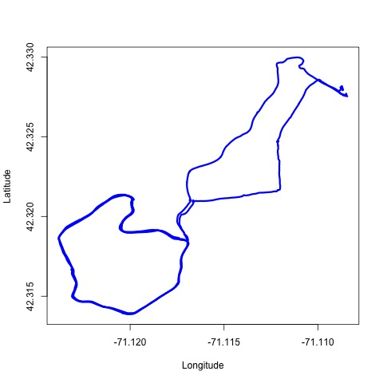

GPS data in R: parse and plot GPX data exported from Strava
In this post, we:
- use a GPX file with with geographic information, exported from Strava from one running activity,
- parse and plot the data.
Table of Contents
GPX data from Strava
GPX stands for “GPS Exchange Format”. It is an XML schema commonly used for storing GPS data.
Strava (Strava, Inc; San Francisco, CA) is a popular activity tracker app I have been using for a few weeks. Strava allows to export GPS data collected during a recorded activity in a GPX format. To export the data, go to Strava activity page > “three dots” button > Export GPX.
I downloaded GPX data from a run I did on Jan 1, 2022. The run distance is 10.88 km and spans 1:03:49 time. The data is available on my GitHub and can be downloaded using the code below.
(Click to see the code to download the data.)
url <- paste0(
"https://raw.githubusercontent.com/martakarass/gps-stats/main/data/",
"/Morning_Run_2022-01-01.gpx")
fpath <- paste0(
"/Users/martakaras/Downloads",
"/Morning_Run_2022-01-01.gpx")
# download
result <- curl::curl_download(url, destfile = fpath, quiet = FALSE)
Parsing GPX
First, we parse the GPX file and put the extracted data trajectories into a data frame:
- timestamp,
- latitude,
- longitude,
- elevation.
(Click to see the code.)
# rm(list = ls())
library(tidyverse)
library(here)
library(XML)
library(lubridate)
library(ggmap)
library(geosphere)
options(digits.secs = 3)
options(scipen = 999)
# parse GPX file
path_tmp <- paste0("/Users/martakaras/Downloads/Morning_Run_2022-01-01.gpx")
parsed <- htmlTreeParse(file = path_tmp, useInternalNodes = TRUE)
# get values via via the respective xpath
coords <- xpathSApply(parsed, path = "//trkpt", xmlAttrs)
elev <- xpathSApply(parsed, path = "//trkpt/ele", xmlValue)
ts_chr <- xpathSApply(parsed, path = "//trkpt/time", xmlValue)
# combine into df
dat_df <- data.frame(
ts_POSIXct = ymd_hms(ts_chr, tz = "EST"),
lat = as.numeric(coords["lat",]),
lon = as.numeric(coords["lon",]),
elev = as.numeric(elev)
)
head(dat_df)
ts_POSIXct lat lon elev
1 2022-01-01 09:42:01 42.32791 -71.10868 23.0
2 2022-01-01 09:42:06 42.32791 -71.10868 23.0
3 2022-01-01 09:42:08 42.32795 -71.10866 23.2
4 2022-01-01 09:42:10 42.32817 -71.10872 24.7
5 2022-01-01 09:42:11 42.32816 -71.10875 24.7
6 2022-01-01 09:42:12 42.32814 -71.10875 23.8
Computing distance, time elapsed and speed
Next, we compute:
- distance (in meters) between subsequent GPS recordings
- time elapsed (in seconds) between subsequent GPS recordings,
- speed (metres per seconds, kilometres per hour) – temporal, based on subsequent GPS recordings.
(Click to see the code.)
# compute distance (in meters) between subsequent GPS points
dat_df <-
dat_df %>%
mutate(lat_lead = lead(lat)) %>%
mutate(lon_lead = lead(lon)) %>%
rowwise() %>%
mutate(dist_to_lead_m = distm(c(lon, lat), c(lon_lead, lat_lead), fun = distHaversine)[1,1]) %>%
ungroup()
# compute time elapsed (in seconds) between subsequent GPS points
dat_df <-
dat_df %>%
mutate(ts_POSIXct_lead = lead(ts_POSIXct)) %>%
mutate(ts_diff_s = as.numeric(difftime(ts_POSIXct_lead, ts_POSIXct, units = "secs")))
# compute metres per seconds, kilometres per hour
dat_df <-
dat_df %>%
mutate(speed_m_per_sec = dist_to_lead_m / ts_diff_s) %>%
mutate(speed_km_per_h = speed_m_per_sec * 3.6)
# remove some columns we won't use anymore
dat_df <-
dat_df %>%
select(-c(lat_lead, lon_lead, ts_POSIXct_lead, ts_diff_s))
head(dat_df) %>% as.data.frame()
ts_POSIXct lat lon elev dist_to_lead_m ts_diff_s speed_m_per_sec speed_km_per_h
1 2022-01-01 09:42:01 42.32791 -71.10868 23.0 0.000000 5 0.000000 0.000000
2 2022-01-01 09:42:06 42.32791 -71.10868 23.0 4.406590 2 2.203295 7.931862
3 2022-01-01 09:42:08 42.32795 -71.10866 23.2 25.403927 2 12.701963 45.727068
4 2022-01-01 09:42:10 42.32817 -71.10872 24.7 2.510645 1 2.510645 9.038324
5 2022-01-01 09:42:11 42.32816 -71.10875 24.7 2.264098 1 2.264098 8.150751
6 2022-01-01 09:42:12 42.32814 -71.10875 23.8 1.899407 1 1.899407 6.837864
Plot elevation, speed
Plot elevation
(Click to see the code.)
plt_elev <-
ggplot(dat_df, aes(x = ts_POSIXct, y = elev)) +
geom_line() +
labs(x = "Time", y = "Elevation [m]") +
theme_grey(base_size = 14)
plt_elev
Plot speed
(Click to see the code.)
plt_speed_km_per_h <-
ggplot(dat_df, aes(x = ts_POSIXct, y = speed_km_per_h)) +
geom_line() +
labs(x = "Time", y = "Speed [km/h]") +
theme_grey(base_size = 14)
plt_speed_km_per_h
The above plot is very wiggly due to small time increment over which the speed statistic was computed. It could be made smoother by first aggregating distance covered and time elapsed over a fixed time interval longer than GPS recordings interval (e.g. 10 seconds), or by using data smoothing (e.g. LOWESS).
The dips in the plot are, to my judgement, correct representations of the times I briefly stopped during the run for various reasons.
Plot run path
A simple, graphics-based version of the trajectory plot:
(Click to see the code.)
plot(x = dat_df$lon, y = dat_df$lat,
type = "l", col = "blue", lwd = 3,
xlab = "Longitude", ylab = "Latitude")

A more fancy plot can be generated with ggmap package. I used labels to
mark each kilometer passed. My Google API key is registered hence I
could also access the Google map for use with
ggmap
(code for API key registration not showed.)
(Click to see the code.)
# get the map background
bbox <- make_bbox(range(dat_df$lon), range(dat_df$lat))
dat_df_map <- get_googlemap(center = c(mean(range(dat_df$lon)), mean(range(dat_df$lat))), zoom = 15)
# no Google token alternative:
# dat_df_map <- get_map(bbox, maptype = "toner-lite", source = "stamen")
# data frame to add distance marks
dat_df_dist_marks <-
dat_df %>%
mutate(dist_m_cumsum = cumsum(dist_to_lead_m)) %>%
mutate(dist_m_cumsum_km_floor = floor(dist_m_cumsum / 1000)) %>%
group_by(dist_m_cumsum_km_floor) %>%
filter(row_number() == 1, dist_m_cumsum_km_floor > 0)
# generate plot
plt_path_fancy <-
ggmap(dat_df_map) +
geom_point(data = dat_df, aes(lon, lat, col = elev),
size = 1, alpha = 0.5) +
geom_path(data = dat_df, aes(lon, lat),
size = 0.3) +
geom_label(data = dat_df_dist_marks, aes(lon, lat, label = dist_m_cumsum_km_floor),
size = 3) +
labs(x = "Longitude",
y = "Latitude",
color = "Elev. [m]",
title = "Track of one Marta's run on 2022-01-01")
plt_path_fancy

Acknowledgements
The above content is inspired by AND borrows some code from Plotting GPS tracks with R by Ivan Lizarazo, who in turn based their content on Stay on track: Plotting GPS tracks with R by Sascha Wolfer. My main contributions are:
- identifying (TTBOMK) an error in their shared code for computing of subsequent locations distance, and using an alternative way,
- parsing GPX timestamp with
lubridatefunction, - providing my run data as open source GPS data set.